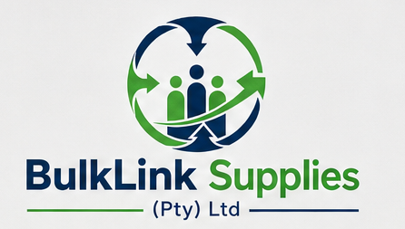
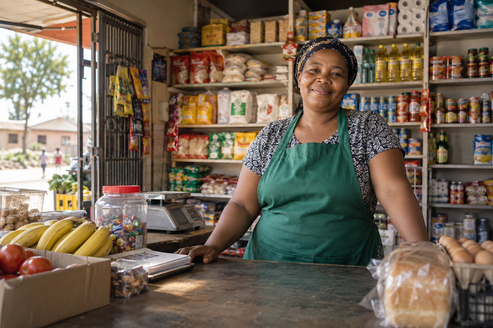

Bring demand together
Understand what neighbourhood traders need and use shared demand to support more effective sourcing.

A stronger supply chain starts together
BulkLink is developing a simpler way for independent traders to access stock, for suppliers to reach more communities, and for local distribution to keep goods moving.
Public information site · Ordering platform in development

THE OPPORTUNITY
Independent shops are essential to everyday life. When their demand is connected, stock can travel further, buying can work harder, and more value can stay local.
OUR APPROACH
BulkLink is being shaped as a practical bridge between buyers, suppliers and delivery networks.
Understand what neighbourhood traders need and use shared demand to support more effective sourcing.
Open routes for wholesale suppliers and local producers to reach independent businesses.
Coordinate fulfilment with distribution partners so products can get closer to the shops that need them.
WHO IT'S FOR
From the shop counter to the supply network, the aim is a system that works for the businesses on the ground.
Spaza shops and other local retailers looking for a more reliable route to everyday stock.
Businesses looking to serve neighbourhood markets through a more connected channel.
Local operators who can help turn sourced products into dependable delivery.
PART OF THE FORUS ECOSYSTEM
BulkLink Supplies is a FORUS project focused on sourcing and distribution. It is intended to work alongside initiatives such as spaza.coop, which serves South Africa's neighbourhood retailers.
The public site is here to introduce the project and start conversations. The operational platform is being developed separately and is not open for ordering or payments yet.
LET'S BUILD THE CONNECTION
Whether you run a shop, supply products or deliver goods, explore the FORUS network and connect with the team.